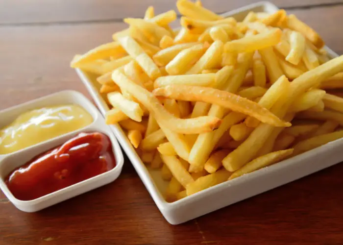

Papas fritas
Receta de papas fritas caseras

Ingredientes
3 o 4 papas (300 gr)
Aceite
Sal
Elaboración (Pasos)
Pelas las papas
Cortarlas en bastón
Calentar aceite en un sarten
Cocinar hasta que esten doradas
Removerlas del aceite y salar a gusto